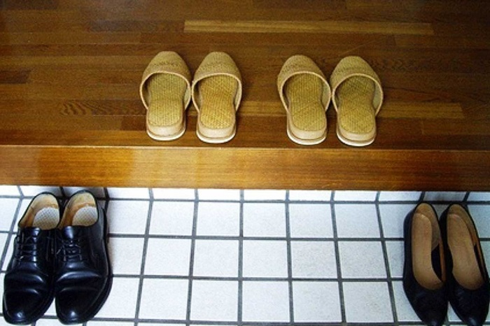

Du lịch Hàn Quốc
Welcome to Korea
Welcome to Korea

Văn hóa khi đến nhà người Hàn Quốc bạn cần lưu tâm chính là thời gian. Ở bất kỳ quốc gia nào, việc đến đúng giờ hẹn luôn là phép lịch sự tối thiểu, đặc biệt Hàn Quốc nói riêng là một quốc gia rất coi trọng thời gian. Tuy nhiên, việc đi quá sớm so với giờ hẹn là điều không nên vì có khả năng gia chủ đang bận rộn chuẩn bị nấu nướng và dọn dẹp. Ngược lại, nếu bạn đến quá muộn, chủ nhà có thể khó chịu do phải chờ đợi. Như vậy, sẽ rất mất lịch sự. Vì thế, khi đến thăm nhà người Hàn Quốc, tốt nhất bạn nên ước lượng thời gian. Hãy đến sớm 5 – 10 phút, tránh làm chủ nhà bối rối khi chưa kịp chuẩn bị gì.
Nếu bạn muốn dẫn bạn bè hoặc ai đó đi cùng khi đến thăm hỏi tại một gia đình Hàn Quốc, hãy nhớ báo trước với gia chủ, ngay cả khi chủ nhà biết người đó. Đây là điều cần lưu ý khi đến nhà người Hàn Quốc. Sẽ rất thô lỗ nếu bạn đưa theo một người khác tới mà không hẹn trước. Tất nhiên, chủ nhà sẽ không từ chối nhưng có thể xảy ra phiền toái, chẳng hạn như thiếu bữa ăn, thức uống và chỗ ngồi.
Việc mang quà khi đến thăm nhà của người khác thể hiện phép lịch sự và tôn trọng. Qùa tặng như một sợi dây gắn kết mối quan hệ, giúp mọi người gần nhau hơn. Cũng như ở các nước khác, văn hóa khi đến thăm nhà người Hàn Quốc lần đầu, mọi người thường mang theo giỏ trái cây, rượu và đồ tráng miệng, bánh kẹo,…. Không nhất thiết phải có một món đồ xa xỉ hay to lớn nhưng bạn nên chọn quà tặng một cách khéo léo.
Bạn nên tránh tặng khăn mùi xoa. Đối với người Hàn, khăn tay thể hiện cho sự khổ cực, là biểu hiện của mồ hôi, nước mắt, đau thương. Viết mực đỏ lên thiệp cũng là điều tối kỵ ở Hàn Quốc. Điều đó tượng trưng cho sự chết chóc, tang thương. Một món quà ý nghĩa sẽ kết nối mọi người hơn nhưng một món quà không thích hợp cũng khiến bạn lâm vào khó xử. Vậy nên, bạn hãy lưu ý khi chọn quà nếu đến thăm nhà người Hàn tại xứ sở kim chi nhé. Khi tặng quà, bạn nên đưa bằng hai tay và cúi người xuống để thể hiện sự kính lễ. Việc sử dụng tay trái khi giao tiếp là điều nên tránh bởi họ quan niệm đó là sự xúc phạm người nhận.
Như ở các nước khác, khi đến nhà gia chủ, trước tiên khách đến thăm bấm chuông cửa và chào để bày tỏ lòng biết ơn về lời mời. Đặc biệt, khi đến thăm nhà người Hàn, bạn nên nói câu “mianhamnita”(xin lỗi). Cụm từ này có nghĩa là để bày tỏ lòng biết ơn vì đã chuẩn bị cho bạn buổi tiếp đón chu đáo và giành thời thời gian cho bạn. Đây là biểu hiện tôn trọng trong văn hóa khi đến nhà người Hàn Quốc
Nếu là người yêu mến đất nước Hàn Quốc, hoặc chỉ xem qua một vài bộ phim, chắc chắn bạn sẽ biết rằng người dân nơi đây không đi giày, dép khi vào trong nhà. Dù ngôi nhà mang bất kỳ phong cách nào, từ truyền thống đến hiện đại thì chỉ cần bước đến cửa, họ sẽ cởi bỏ những đôi giày, dép vừa mang. Do văn hóa sinh hoạt cơ bản: ăn, ngủ, nghỉ đa phần đều diễn ra trên nền nhà nên điều này nhằm giữ cho ngôi nhà được sạch sẽ. Ngoài ra, họ đặt đôi giày rồi quay mũi về phía cửa để dễ dàng mang và nhanh chóng hơn khi đi ra ngoài vào các lần sau. Chính vì vậy, đây là văn hóa khi đến nhà người Hàn Quốc mà bạn nên ghi nhớ.
Hầu hết các ngôi nhà của người Hàn đều sử dụng dép dùng để đi trong nhà. Cũng có một số gia đình không có thói quen đó. Tuy nhiên, khi đến thăm nhà người Hàn Quốc, nếu thấy gia chủ có dép đi trong nhà và những thành viên khác cũng mang chúng thì bạn nên làm theo. Bạn hãy nhớ luôn mang tất khi bước vào, bất kể trời nóng. Người Hàn quan niệm việc đeo tất khi gặp người khác là thể hiện sự tôn trọng. Điều nhỏ này đã được nâng lên thành nét văn hóa đặc trưng của Hàn Quốc.
Sau khi chào hỏi và được hướng dẫn vào phòng khách, tốt hơn hết bạn nên đứng và đợi cho đến khi gia chủ nói về vị trí ngồi, tránh “lấy mất” chỗ ngồi của người khác. Nếu như trong nhà có người lớn tuổi, bạn hãy đợi họ ngồi xuống trước. Đó là cách ứng xử văn minh trong văn hóa khi đến nhà người Hàn Quốc.
Mỗi gia đình có những quy tắc riêng. Chẳng hạn như cách sử dụng bát đĩa và thói quen ăn uống. Nếu bạn ở lại đến giờ ăn, hãy tuân thủ các quy tắc khi theo dõi hành vi của mọi người trong nhà.
Tránh cắm đũa lên bát cơm bởi đó là điều không tốt, thể hiện sự đen đủi. Ngoài ra, trước khi dùng bữa, người Hàn thường nói “ jalmeoggessseubnida”. Nó có nghĩa “Tôi sẽ ăn thật ngon miệng” như trong tiếng Việt, thay cho câu mời và “jalmeogeossseubnida” biểu hiện cho “Tôi đã ăn rất ngon” thay cho sự cảm ơn tới người chuẩn bị bữa ăn. Ngoài ra, bạn nên chú ý sử dụng thêm câu:“ gamsahabnida” – “Thực sự xin cảm ơn” vào trước cụm tôi đã ăn rất ngon. Biểu hiện giao tiếp trong văn hóa khi đến nhà người Hàn Quốc hoàn toàn khác với Việt Nam phải không nào?
Nếu bạn không nói gì, họ sẽ không biết món ăn có vừa miệng hay không. Vì vậy, hãy cố gắng bày tỏ lòng biết ơn của bạn bằng những câu nói lịch sự nhất. Với những thực phẩm không thể ăn được, bạn không cần phải ép bản thân. Hãy thành thật nói với chủ nhà, họ sẽ thông cảm cho bạn. Tuy nhiên, lịch sự là không thể hiện sự từ chối quá mức.
Có rất nhiều người Hàn muốn dọn bàn và rửa bát ngay sau khi ăn xong. Trong trường hợp như vậy, thật lịch sự khi đề nghị “dowa deulilkkayo? “ mang nghĩa “Để tôi giúp anh/chị…được không ạ?” Gia chủ có có thể từ chối, nhưng bạn hãy đưa ra lời đề nghị một lần nữa. Nếu như bạn nhiệt tình, chắc chắn họ sẽ có một ấn tượng tốt. Thời gian đó là cơ hội tuyệt vời để làm quen với gia đình của họ và những vị khách khác. Bạn cũng được tìm hiểu rõ hơn về văn hóa Hàn Quốc.
Nếu chỉ đơn thuần đi Hàn Quốc du lịch, bạn khó có thể tiếp xúc với cuộc sống và văn hóa của người Hàn. Đến thăm một gia đình Hàn Quốc sẽ là một trải nghiệm thú vị và vui vẻ. Bạn cũng có một kỉ niệm khó quên. Điều này làm sâu sắc thêm tình cảm giữa những người Việt Nam và Hàn Quốc. Hành động trong lần gặp đầu tiên vô cùng quan trọng. Chính vì thế, những lưu ý trong văn hóa khi đến nhà người Hàn Quốc ở trên sẽ giúp ích cho hành trình khám phá xứ sở kim chi của bạn.
GỢI Ý TOUR DU LỊCH HÀN QUỐC |
|---|
>> Hà Nội – Hàn Quốc: Seoul – Nami – Everland 5N Bay T’way Air
|
Top 20 điểm tham quan nhất định phải ghé thăm trong hành trình chinh phục Seoul

Điện thoại: 0903357616
Email: thaontps24690@fpt.edu.vn